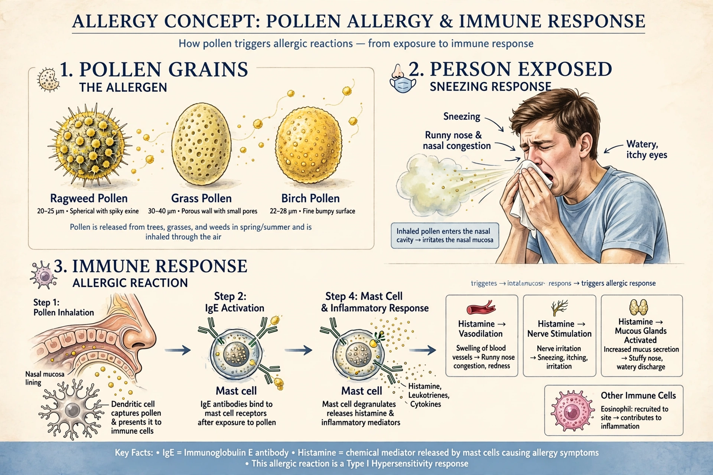

Allergies, also known as allergic diseases, are conditions in which the immune system reacts abnormally to substances in the environment that normally cause little or no problem. Common allergens include pollen, dust mites, animal dander, foods such as peanuts and shellfish, insect stings, and medicines.

Allergic rhinitis (hay fever) causes sneezing, runny nose and watery eyes. Skin reactions include hives and dermatitis. Food allergies can cause vomiting and swelling. The most severe reaction, anaphylaxis, can cause airway obstruction and a dangerous drop in blood pressure. Allergies are closely linked to asthma.
In the commonest form, allergen-specific IgE antibodies bind mast cells and basophils; re-exposure triggers release of histamine and other mediators.
Diagnosis uses history, skin-prick tests and blood IgE tests. Management includes allergen avoidance, antihistamines, corticosteroids such as prednisone, allergen immunotherapy, and epinephrine auto-injectors for anaphylaxis.
Allergies are very common and have increased in developed countries; the hygiene hypothesis proposes reduced early microbial exposure contributes.